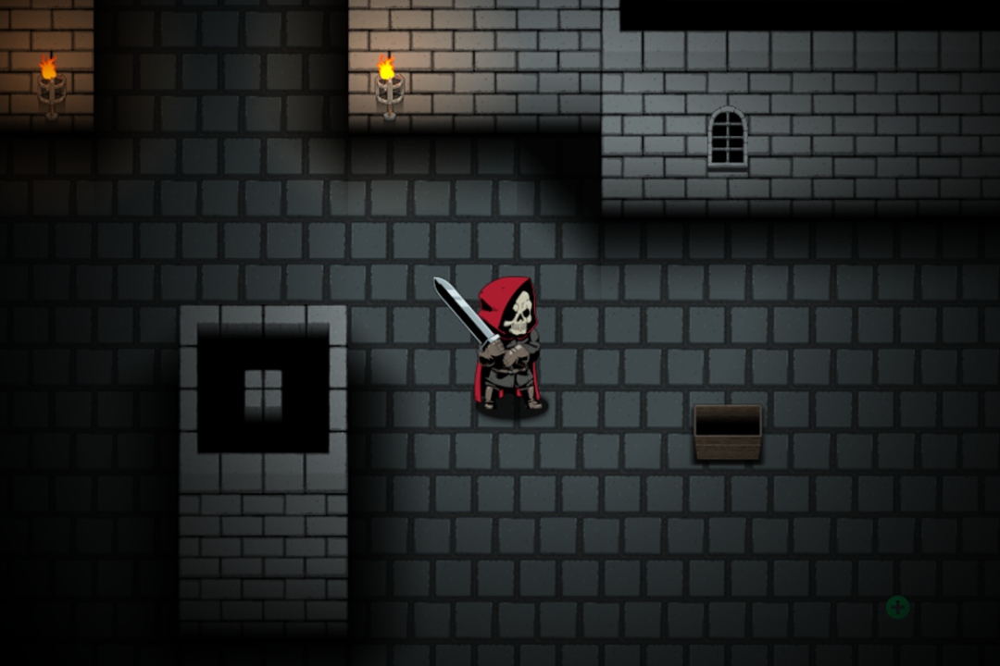
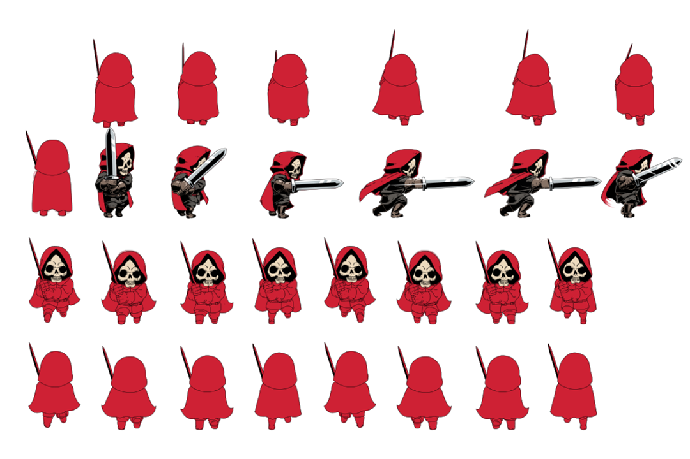
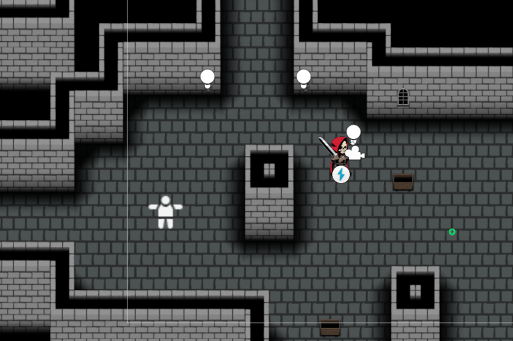

Laying The First Stones
08/10/2023
- Outlined Basic Game Premise
- Created Rough Player Sprites
- Created Rough Level Sprites
- Implemented Rough Controls
- Created Basic 'Wandering Soul' Enemy
Outlined Basic Game Premise
The aim of this Game will be to initially create a small level, where the player controls a top-down, 2d character and explores the level, designed like a dungeon while encountering enemies before finally meeting the level boss.
The aesthetic of the game will be very much inspired by things like Berserk, Dark Souls, King's Field, European Medieval Fantasy and what I class as 'Hard Fantasy', similar to the way Hard Science Fiction typically presents a more gritty, reality rooted setting. However there will still be plenty of fantastical elements such as monster and the setting in general.
The player is a robed skeleton figure who aims to fight through the dungeons of an underworld, with the end goal of killing Death. The player cannot die per-se. As the player progresses he will collect Souls from enemies defeated. Collecting souls will increase the stats like damage, health etc of the player. If the player dies with souls collected, all souls will be dropped at the position of death and the players stats will return to normal unless they are able to regain the lost souls, or collect more souls again.
The souls while dropped may be picked up by wandering enemies, who will have their own stats increased as a result of souls posession, meaning they will be more challenging for the player to fight and regain souls.
Possible Uses of Souls
- Thrown to lure enemies
- Dropped before death for some benefit
- Consumed to regain health
Created Rough Player Sprites
I have made a few of the sprites in more detail, with the majority still rough. I would liked to create the art for this game with a significant level of detail, similar to the style of Darkest Dungeon with an emphasis on darkness, shadows and isolated patches of illumination.
The enemy and level aesthetic will be focused around Death in mythology and Cosmic Horror styles visuals, such as abominations and monsters.
Created Rough Level Sprites
The initial level will be very much designed as a stone castle style dungeon with a dark void outside of the playable areas. I still need to adjust the sorting layers as environment tiles are rendered so that everything appears as it should, as occasionally parts will over or underlap and break the illusion, like player parts clipping through walls.
Implemented Rough Controls
The controls are simple so far, as the game is top down. Movement will be WASD, Dpad or Analogue stick, with Up, Down, Left and Right as possible directions. The downside of this is that I need to create more sprites for each specific direction, but the end product hopefully will benefit from this extra detail.
The player will have a few attacks, one straight ahead of wherever they are facing and one in an arc of 180 degress ahead of where they are facing to allow non direct strikes on enemies.
The player will also have an interact button, to pick up, use and generally interact with the environment.
Created Basic 'Wandering Soul' Enemy

Very basic, I have made a simple script that has the Enemy wander around randomly and seemingly aimlessly. The Enemy will not be aggressive, serving as just a souls dispensery if the player chooses to attack them. They will be visually lost soul type created floating around the underworld without cause or hopes.
Plans For The Next Week
- Implement Soul Counter
- Create Soul Item
- Implement Player Health
- Create UI for the Souls and Health
- Create Basic Sprite for 'Wandering Soul' Enemy